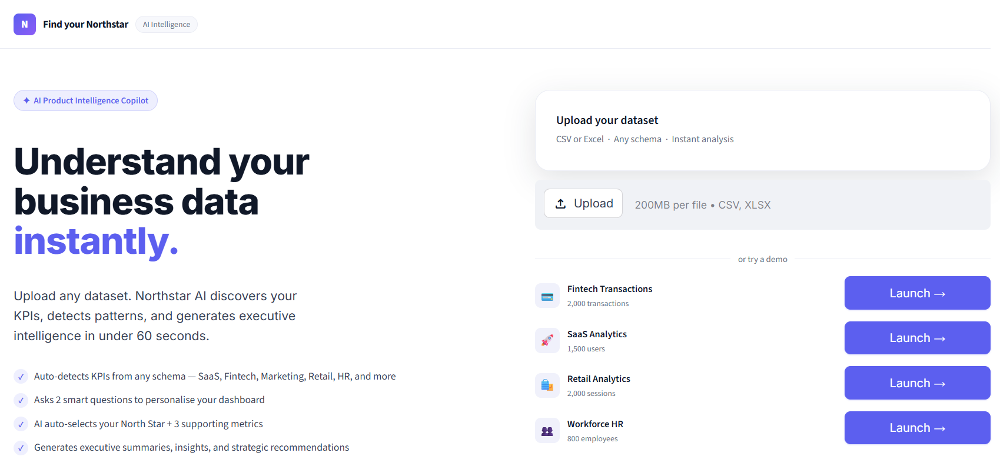
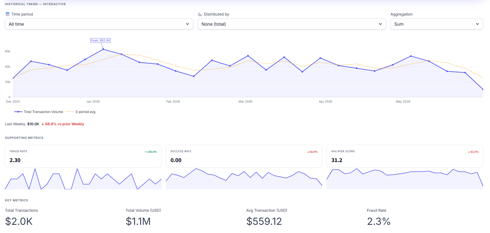
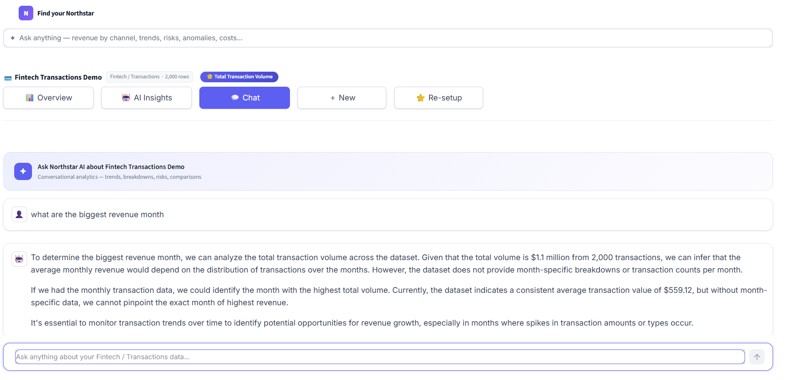

AI Analytics Strategy Agent that helps organizations identify their most important business metric automatically. Upload any dataset. Generate dashboards. Discover the North Star Metric that drives success.

Most organizations have data but lack clarity. Executives face dashboard overload. Teams track hundreds of KPIs but struggle to identify which metric truly drives business success. Traditional BI platforms require:
Instead of asking users to build dashboards manually, NorthStar AI flips the workflow. Upload Data → AI Understands Context → Identifies KPI Framework → Builds Dashboard → Recommends North Star Metric
The goal was simple: Reduce the time from raw data to executive insight from days to under 60 seconds.
Detects SaaS, Fintech, HR, Marketing and Retail datasets automatically.
Guided onboarding helps identify the most important metric to track.
Creates executive dashboards without manual configuration.
Ask questions in plain English and receive data-backed answers instantly.


Why focus on a North Star Metric? Organizations often suffer from KPI overload. A single guiding metric creates alignment and simplifies decision-making.
Why combine statistics with AI? The platform computes KPIs, anomalies and aggregations using deterministic methods. GPT is used only for narrative, recommendations and explanation. This improves trust and accuracy.
Frontend: Streamlit Data Layer: Pandas, DuckDB AI Layer: GPT-4o-mini ML: Scikit-learn Charts: Plotly Deployment: Streamlit Cloud
✓ Theme Detection ✓ Dashboard Generation ✓ KPI Discovery ✓ Conversational Analytics
✓ Multi Dataset Comparison ✓ Dashboard Persistence ✓ PDF Reporting ✓ Slack Delivery
✓ Snowflake Integration ✓ BigQuery Integration ✓ AI Briefings ✓ Team Workspaces
Built to demonstrate product strategy, AI architecture and end-to-end product ownership.
Back to Portfolio